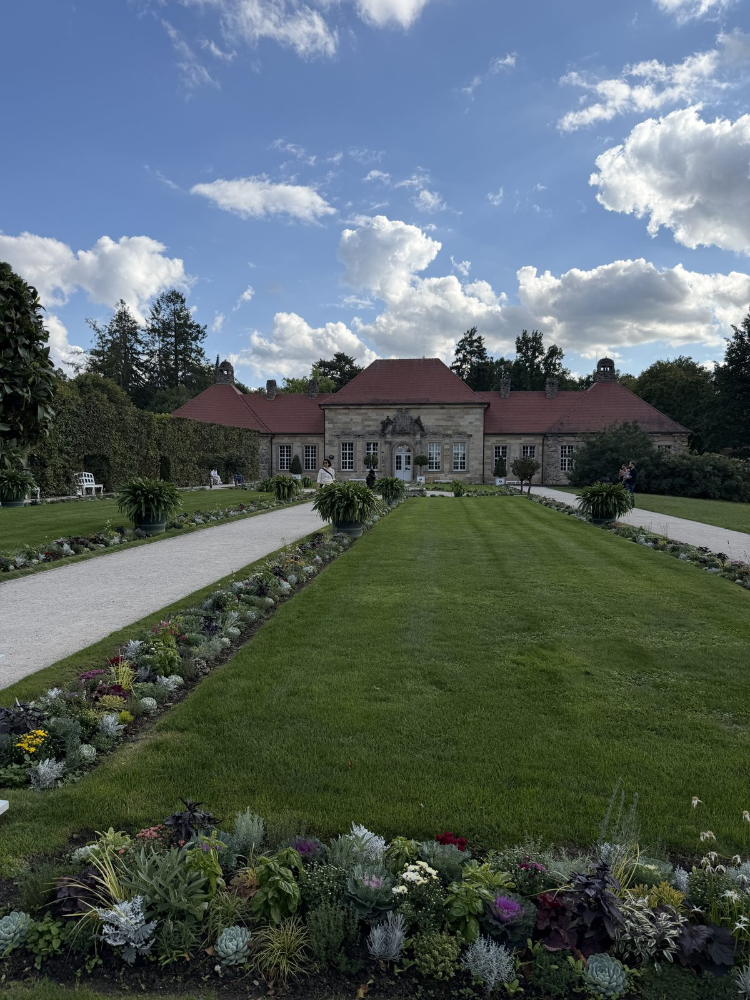
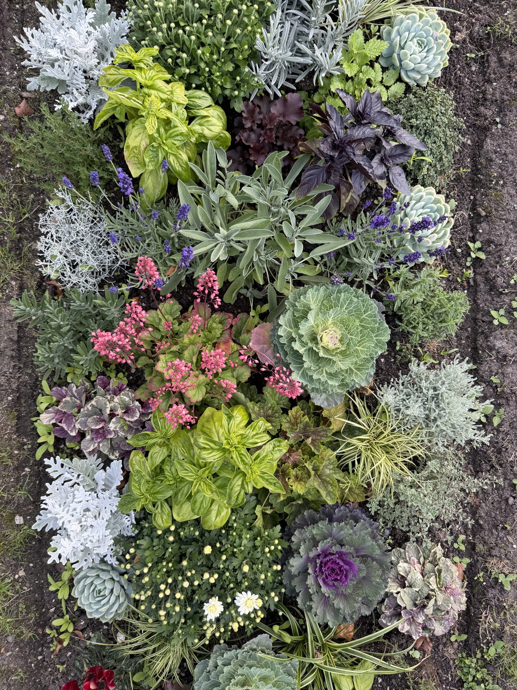
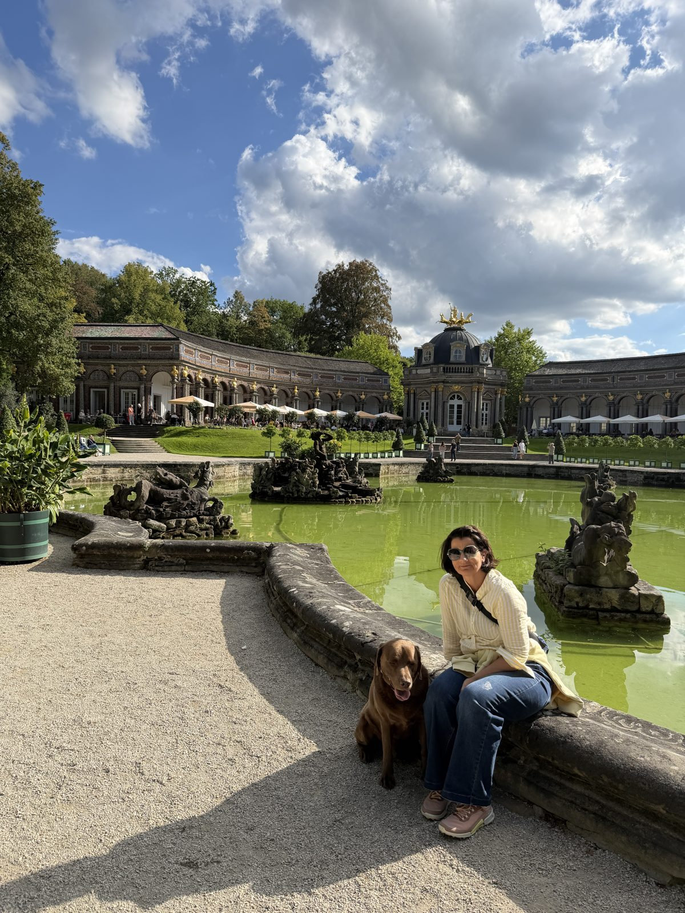
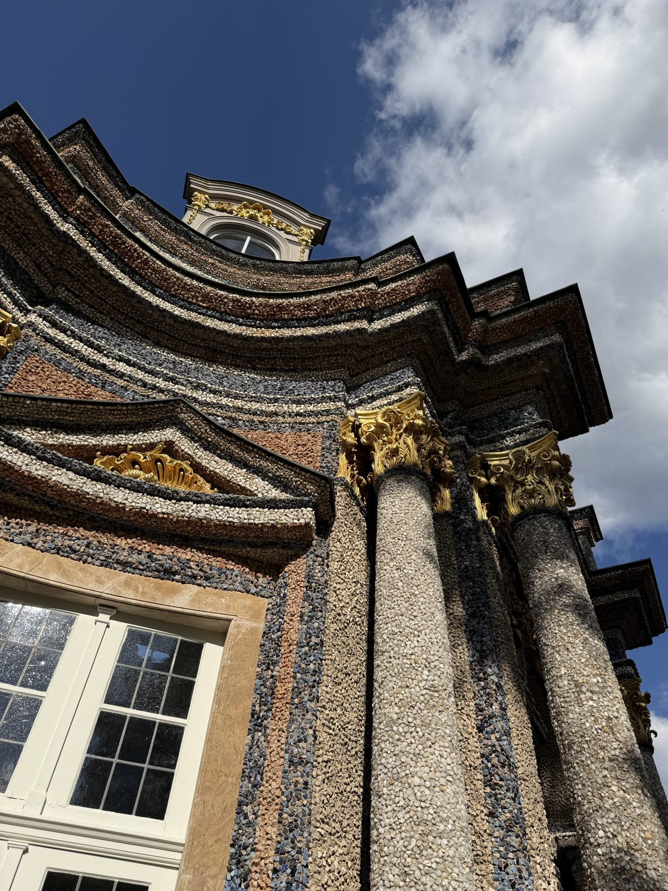
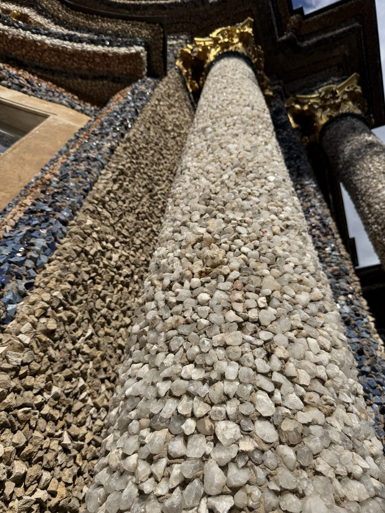
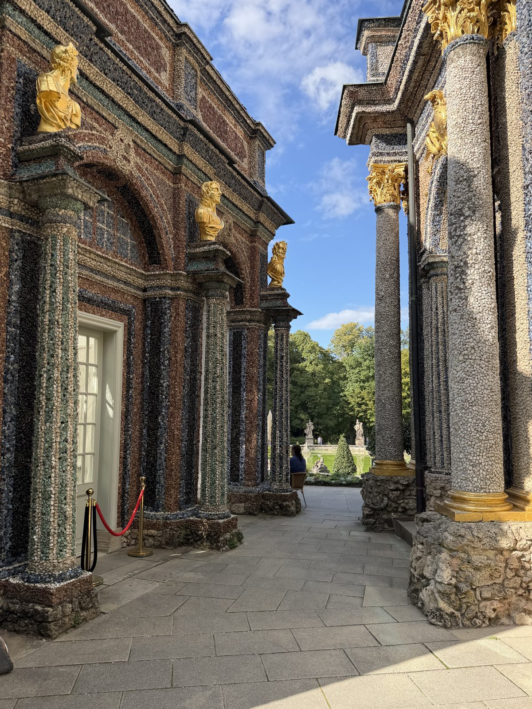
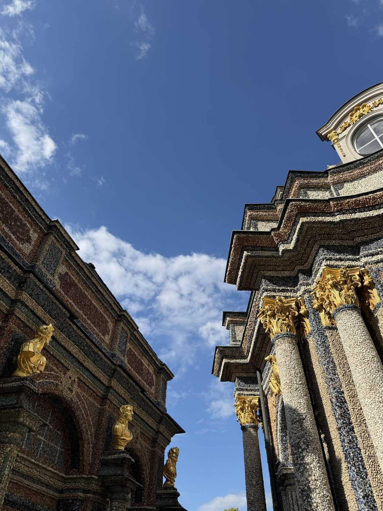
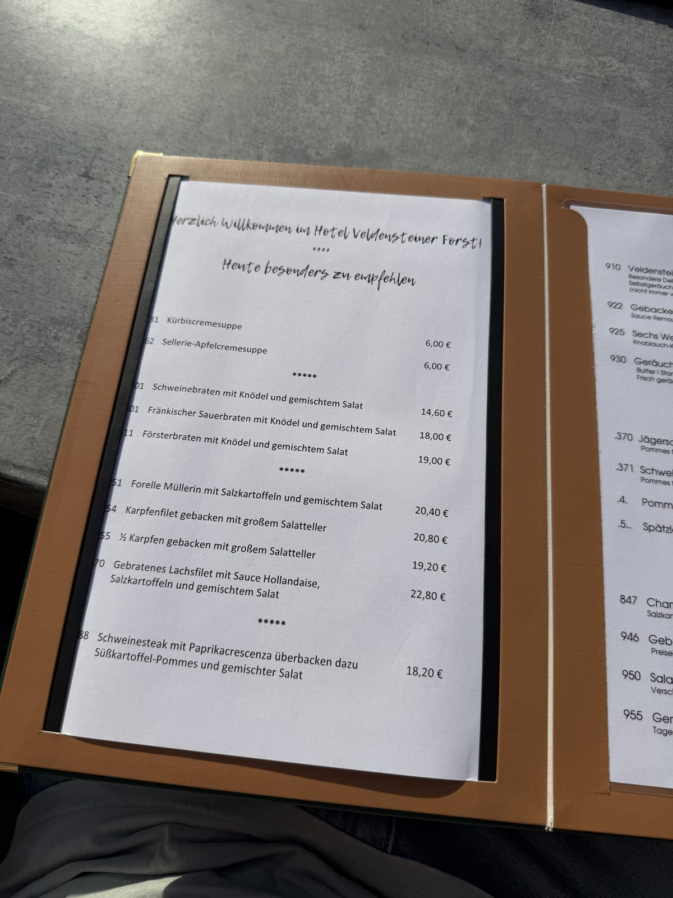

12. September 2026
Die Rückfahrt: 900 km mit Stopp in Bayreuth

Die Rückfahrt: von Rügen bis nach Hause, 900 km. Lief super, freie Bahn mit Marzipan im Gepäck. Zwischenübernachtung in Bayreuth – und eine Stunde mit dem Hund durch die Eremitage spaziert.






Anschließend noch im Gasthof Veldensteiner Forst eingekehrt – da gab's was Schönes zu essen. Und ja, schon lustig, wie viel günstiger die Preise im Fränkischen sind im Vergleich zu München.
